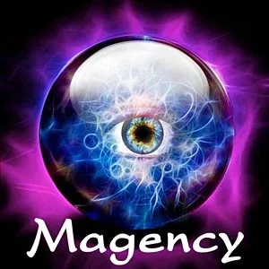

Knacks on Strikingly
[

](http://4feelings.mystrikingly.com/)
YOU WERE BORN WITH YOUR KNACKS. THEY CAN BE SEEN IN EVERY PHOTO OF YOU, IF YOU HAVE THE COURAGE TO MAKE THE INVISIBLE VISIBLE / PART 1
Matrix Code KNACKSxx.01
Look for old photos of you as a child or baby. If you no longer have photos, ask your parents or grandparents for them.
Sit down and spread the photos out on the table in front of you.
For each photo, write down which of the four feelings (anger, fear, sadness, and joy) was alive in you at the time.
You may need to go back in time using your memory.
Remember the moment when the photo was taken. Who took it?
Where was it? Who are the other people in the photo and what did you do with them?
What were the circumstances and what did you feel? So what did you really feel?
After completing this experiment, please register Matrix Code *KNACKSxx.01* in your free account at StartOver.xyz.
This Experiment is worth 1 Matrix Point.
[

](http://selfobservation.mystrikingly.com/)
YOU WERE BORN WITH YOUR KNACKS. THEY CAN BE SEEN IN EVERY PHOTO OF YOU, IF YOU HAVE THE COURAGE TO MAKE THE INVISIBLE VISIBLE / PART 2
Matrix Code KNACKSxx.02
Find a partner for part 2 of this experiment.
In this part, your counterpart has the task of listening to you and taking notes.
Go through photo by photo and speak about what qualities (visible and invisible) stand out about you in this photo.
Also list the evidence that supports these qualities.
Allow at least 8 minutes for each photo and reminisce about the moment that photo was taken.
List any traits, personality traits, character traits that you can perceive.
Also list the strategies you used to look so harmless in the photo.
What did you do to avoid running away screaming?
What trick, what ruse did you use that no one noticed?
After completing this experiment, please register Matrix Code *KNACKSxx.02* in your free account at StartOver.xyz.
This Experiment is worth 1 Matrix Point.
[

](http://distinction.mystrikingly.com/)
YOU WERE BORN WITH YOUR KNACKS. THEY CAN BE SEEN IN EVERY PHOTO OF YOU, IF YOU HAVE THE COURAGE TO MAKE THE INVISIBLE VISIBLE / PART 3
Matrix Code KNACKSxx.03
With the person who wrote down for you (Part 2), go back through all the characteristics you wrote down.
Distill together from what you wrote down and the photos your Knacks.
Maybe your counterpart still sees aspects you didn't.
Knacks are not survival strategies and neither are feelings.
Survival strategies are survival strategies and feelings are feelings.
Knacks are Knacks and you were born with them. Knacks are unique talents.
Only you have them like this and in this combination.
After completing this experiment, please register Matrix Code *KNACKSxx.03* in your free account at StartOver.xyz.
This Experiment is worth 1 Matrix Point.
[

](http://becomeanexperimenter.mystrikingly.com/)
NOTICE THE KNACKS OF OTHERS. YOU MAY BE THE FIRST PERSON TO NOTICE THESE UNIQUE TALENTS.
Matrix Code KNACKSxx.04
Sit down in a sidewalk café, choose a seat from which you can easily observe other people.
Observe individuals and write down in your Beep! Book what pops you notice about them. What is the evidence for your perceptions?
Observe not only adults, but also children and babies on their mother's arm or in a stroller. Remember that we come into the world with the Knacks.
After completing this experiment, please register Matrix Code *KNACKSxx.04* in your free account at StartOver.xyz.
This Experiment is worth 1 Matrix Point.
[

](https://magencyxyz.mystrikingly.com/)
WHAT KNACKS DID ELVIS PRESLEY HAVE?
Matrix Code KNACKSxx.05
If you are a famous personality, at the latest after your death come statements about how you were as a private person, how you really were.
For this experiment, you can use your unique Knacks Hunter traits and find out the Knacks of famous people that no one may have seen before.
Explore the Knacks of people like:
- Jesus Christ
- Adolf Hitler
- Marilyn Monroe
- Charlie Chaplin
- Marlon Brando
- Ghandi
Browse the Internet for childhood pictures of these people. What have others said about them? What pops out in the works they left behind (movies, books...)?
After completing this experiment, please register Matrix Code *KNACKSxx.05* in your free account at StartOver.xyz.
This Experiment is worth 1 Matrix Point.
[

](https://asking.mystrikingly.com/)
WHO SAYS THAT ONLY HUMANS HAVE KNACKS? EXPLORE THE KNACKS OF ANIMALS, PLANTS AND LANDSCAPES.
Matrix Code KNACKSxx.06
To observe the Knacks of animals, you could observe the behaviors of individual animals, such as:
- several ants in an anthill
- dogs in the park
- horses in the paddock
- sheep in the herd
- flocks of birds
- storks in the field
To observe the Knacks of plants, a forest or a meadow in bloom is suitable.
To see the Knacks of entire landscapes, aerial photography, a balloon flight, or a parachute jump might be suitable.
You may find that plants, animals, or landscapes have no Knacks.
Then that's just the way it is.
After completing this experiment, please register Matrix Code *KNACKSxx.06* in your free account at StartOver.xyz.
This Experiment is worth 1 Matrix Point.
[

](https://brightprinciples.mystrikingly.com/)
PLACE YOUR KNACKS NEXT TO YOUR BRIGHT PRINCIPLES ON THE TABLE. YOUR KNACKS CHANGE THE SPACE.
Matrix Code KNACKSxx.07
From now on, when someone asks you about your Bright Principles, also name your Knacks.
Say, for example, "I am love, clarity, creation. My Knack is to hit hooks in space like a rabbit."
After completing this experiment, please register Matrix Code *KNACKSxx.07* in your free account at StartOver.xyz.
This Experiment is worth 1 Matrix Point.
[

](https://3cell.mystrikingly.com/)
IF YOU ARE IN A TEAM (PM-TEAM, 3CELL, POSSIBILITATOR GROUP, TRAINERPATH), DO THE FOLLOWING EXPERIMENT IN YOUR TEAM / TEAM EXPERIMENT PART 1
Matrix Code KNACKSxx.08
Tell your team a week before the scheduled date to each bring a photo or two of themselves as a baby.
Go into breakout rooms in threes. Person A starts and holds their child photos (maximum 2) up to the camera so that the other two can clearly see both Person A and the child photos.
The two begin by speaking about Person A's Knacks.
These are the unique talents and traits that are there now and have always been there. They may be previously hidden talents that were not yet visible. Now and here they are visible and can be named.
One of the two people makes bullet points. Be sure to each take the role of scribe once.
Switch roles after 9 minutes.
Come back to the main space without any feedback or sharings.
After completing this experiment, please register Matrix Code *KNACKSxx.08* in your free account at StartOver.xyz.
This Experiment is worth 1 Matrix Point.
[

](https://archetypallineage.mystrikingly.com/)
IF YOU ARE IN A TEAM (PM-TEAM, 3CELL, POSSIBILITATOR GROUP, TRAINERPATH), DO THE FOLLOWING EXPERIMENT IN YOUR TEAM / TEAM EXPERIMENT PART 2
Matrix Code KNACKSxx.09
This part of the experiment continues in the main space.
Each of the people present has a note in front of them with Knacks and unique characteristics of another person.
One of them begins to introduce the person based on the write-up, without mentioning the person's name. She names everything that was said, all the Knacks, all the talents, everything that has always been there and has already been seen in the children's photos.
Everyone else listens and notes the Knacks they find particularly attractive and valuable in their Beep! Book.
It is not revealed which Knacks belong to which person.
After completing this experiment, please register Matrix Code *KNACKSxx.09* in your free account at StartOver.xyz.
This Experiment is worth 1 Matrix Point.
[

](http://commitment.mystrikingly.com/)
IF YOU ARE IN A TEAM (PM-TEAM, 3CELL, POSSIBILITATOR GROUP, TRAINERPATH), DO THE FOLLOWING EXPERIMENT IN YOUR TEAM / TEAM EXPERIMENT PART 3
Matrix Code KNACKSxx.10
One person starts and says something like, "With the person who has the Knack of making hooks in space, I'd like to prepare a worktalk / write an article / explore how to hold space nonlinearly."
Gather into smaller groups with your love, commitment and enthusiasm for the Knacks in the space.
This process of coming together cannot be described. The reason is that teams have Knacks too, so this process is unique and intuitive.
After completing this experiment, please register Matrix Code *KNACKSxx.10* in your free account at StartOver.xyz.
This Experiment is worth 1 Matrix Point.
[

](http://createpossibility.mystrikingly.com/)
IF YOU ARE IN A TEAM (PM-TEAM, 3CELL, POSSIBILITATOR GROUP, TRAINERPATH), DO THE FOLLOWING EXPERIMENT IN YOUR TEAM / TEAM EXPERIMENT PART 4
Matrix Code KNACKSxx.11
Get together as a team and use your Knacks to create what couldn't be created before.
After completing this experiment, please register Matrix Code *KNACKSxx.11* in your free account at StartOver.xyz.
This Experiment is worth 1 Matrix Point.